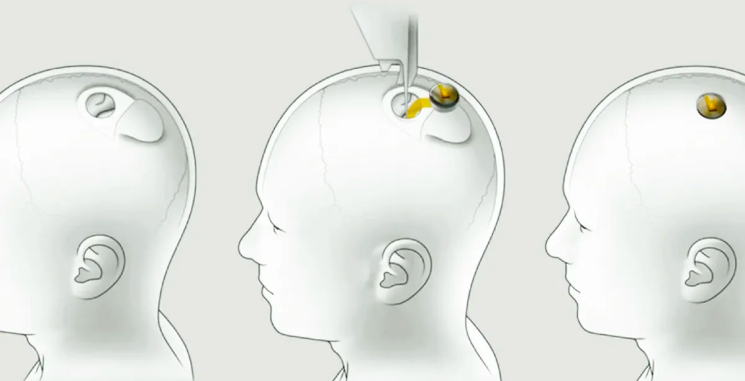

Neuralink, led by Elon Musk, recently implanted a brain-computer interface in a human, offering hope for a technology-enriched life. This breakthrough in "brain-computer interface" technology has potential for transforming the lives of those with conditions like paralysis, as indicated by Musk's tweet on successful surgery and positive recovery, showcasing improved neuron spike detection.

Valued at $3.5 billion, Neuralink's progress signals growing demand for neurotechnology, aiming to empower individuals with severe movement constraints. Competing with other brain-computer interface companies, the primary goal is to enhance the human experience, termed "Telepathy," enabling control of devices through thought.